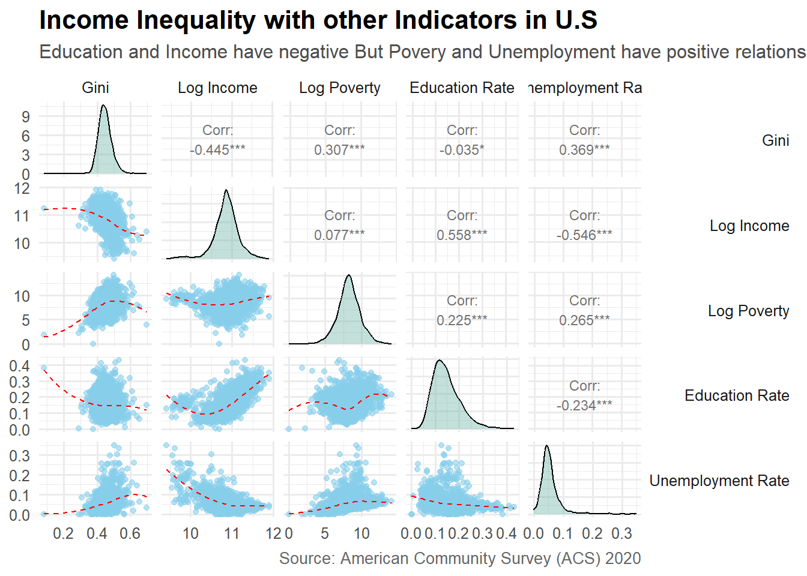
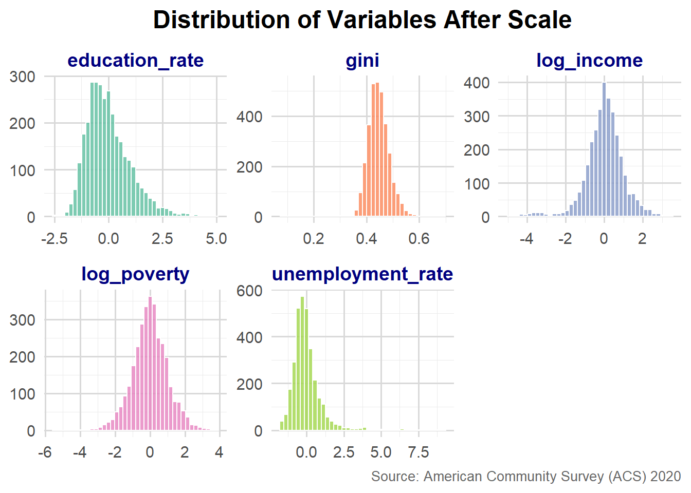
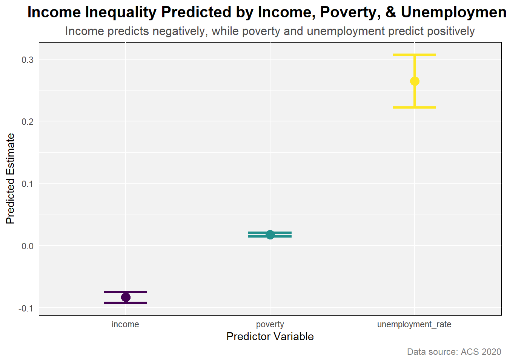

county gini median_income poverty
Length:3221 Min. :0.0824 Min. : 12283 Min. : 0
Class :character 1st Qu.:0.4197 1st Qu.: 44939 1st Qu.: 1547
Mode :character Median :0.4435 Median : 52381 Median : 3831
Mean :0.4464 Mean : 54172 Mean : 13136
3rd Qu.:0.4690 3rd Qu.: 61242 3rd Qu.: 9937
Max. :0.6962 Max. :147111 Max. :1401656
NA's :1
education_rate unemployment_rate
Min. :0.0000 Min. :0.00000
1st Qu.:0.1053 1st Qu.:0.03656
Median :0.1374 Median :0.04926
Mean :0.1468 Mean :0.05451
3rd Qu.:0.1791 3rd Qu.:0.06431
Max. :0.4300 Max. :0.34847
Analysis
1. Explanatory Data Analysis
Following is EDA.
1.1 Summary of Variables
1.2 Plot

Above plot shows that increse in Education and Income has reduced income inequality whereas, increse in unemployment and poverty has incresed income inequality. The relationship among income inequality (gini) and other social indicators can be seen in plot. Log of income and poverty were taken for better comparision purpose. Further, Histograms of every indicator can also be seen in dignal which shows that distributions of gini, log income, log poverty are normal but distributions of education rate and unemployment rate are slightly and significantly right skewed respectively.
2. Data Normality
Skewness in distribution can influnce the model, therfore, all the variables were scaled to have better results for comparision or explanation. Following code was used for log and scale.
2.1 Histogram

Above histograms show that distributions of gini, log_income, log_poverty are normal howerver, distributions of education_rate and unemploment_rate are still rightly skewed. Hence, scale of variables is purposeless.
2.2 Shapiro test
Shapiro test also checks whether distribution is normal or not. If results show that W value is equal to 1 and p value is > 0.05 then distribution is normal.
2.2.1 Unemployment Rate
Shapiro-Wilk normality test
data: unemployment_rate
W = 0.80365, p-value < 2.2e-162.2.2 Education Rate
Shapiro-Wilk normality test
data: education_rate
W = 0.95315, p-value < 2.2e-16
In case of both variables; unemployment_rate and education_rate, shapiro showed that distributions are not normal.
3. Model
My outcome variable was continues therfore, Liner Regression Model was applied. Following is the general form of a linear regression model.
\[ Y_i = \beta_0 + \beta_1 X_{1i} + \beta_2 X_{2i} + \cdots + \beta_p X_{pi} + \varepsilon_i \]
Where: - ( Y_i ) is the dependent (response) variable, - ( X_{1i}, X_{2i}, , X_{pi} ) are the independent variables (predictors), - ( _0 ) is the intercept, - ( _1, , _p ) are regression coefficients, - ( _i (0, ^2) ) is the error term assumed to follow a normal distribution.
Probability Family Function when the outcome variable is normally distributed:
\[ Y_i \sim \mathcal{N}(\mu_i, \sigma^2), \quad \text{where} \quad \mu_i = \beta_0 + \beta_1 X_{1i} + \cdots + \beta_p X_{pi} \]
The likelihood function for all ( n ) observations is:
\[ L(\boldsymbol{\beta}, \sigma^2) = \prod_{i=1}^{n} \frac{1}{\sqrt{2\pi\sigma^2}} \exp\left( -\frac{(Y_i - \mu_i)^2}{2\sigma^2} \right) \]
3.1 Coefficients
# A tibble: 5 × 7
term estimate std.error statistic p.value conf.low conf.high
<chr> <dbl> <dbl> <dbl> <dbl> <dbl> <dbl>
1 (Intercept) 0.472 0.00307 154. 0 0.466 0.478
2 income -0.135 0.00541 -24.9 1.07e-125 -0.145 -0.124
3 poverty 0.0142 0.00138 10.3 1.87e- 24 0.0115 0.0169
4 education_rate 0.217 0.0136 16.0 2.56e- 55 0.191 0.244
5 unemployment_rate 0.249 0.0208 12.0 2.59e- 32 0.208 0.289
EDA show that education rate has negative correlation with income inequality but coeffients show that it predicts positively. Hence, need for Variance Inflation Factor (VIF) analysis to see whether the change of coefficient sign is due to multicollinearity.
VIF analysis
income poverty education_rate unemployment_rate
2.009698 1.069052 1.752894 1.270618
VIF between 1 to 5 means acceptable multicollinearity among predictors. However, beyound 5 means problematic. Here, VIF results show that there is no multicollinearity. Therefore, it was decided to remove education rate because it may disturbe the model results because in model coefficients its results sign is not consistant with EDA
3.2 Coefficients without education
# A tibble: 4 × 7
term estimate std.error statistic p.value conf.low conf.high
<chr> <dbl> <dbl> <dbl> <dbl> <dbl> <dbl>
1 (Intercept) 0.475 0.00318 149. 0 0.468 0.481
2 income -0.0831 0.00450 -18.5 1.34e-72 -0.0920 -0.0743
3 poverty 0.0177 0.00141 12.6 2.42e-35 0.0150 0.0205
4 unemployment_rate 0.265 0.0216 12.3 7.35e-34 0.222 0.307 3.3 Data Generating Mechanism
\[ \hat{\text{Gini}} = 0.475 - 0.0831 \cdot \text{Income} + 0.0177 \cdot \text{Poverty} + 0.265 \cdot \text{UnemploymentRate} \]
3.4 Model Prediction

Increase in income reduces income inequality by -0.083 on the other hand, increse in poverty and unemployment rate increse income inequality by 0.018 and 0.265 respectively. Unemployment rate predicts higher than others.